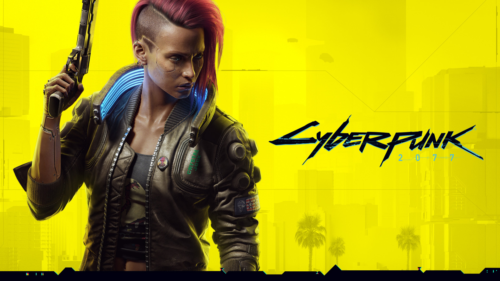

Embora detalhes específicos sobre "Black Ops 6" ainda não tenham sido divulgados, a expectativa é que o jogo continue a explorar cenários de guerra históricos e modernos, com uma história envolvente centrada em operações secretas e missões de alto risco.
Menu
Gerais
Call of Duty: Black Ops 6
"Call of Duty: Black Ops 6" é um futuro jogo de tiro em primeira pessoa da popular sub-série Black Ops, desenvolvido pela Treyarch e publicado pela Activision. O jogo promete uma experiência de combate intensa e narrativa profunda, continuando a tradição da série.
Por Isaque G. S. Brandão | 01/07/2024
Apresentação
Início
A série "Black Ops" é conhecida por suas narrativas complexas e atmosferas tensas, mergulhando os jogadores em missões clandestinas durante períodos críticos da história. "Black Ops 6" provavelmente manterá essa tradição, oferecendo um enredo que mistura ficção e realidade, explorando conspirações e operações secretas que moldaram o mundo.
Trailer do filme
"Call of Duty: Black Ops 6"
Desenvolvimento
Os jogos anteriores da série "Black Ops" abordaram temas variados, desde a Guerra Fria até conflitos modernos. "Black Ops 6" pode continuar a explorar esses períodos ou introduzir novos cenários, proporcionando uma visão única sobre os eventos históricos.
Espera-se que o jogo apresente uma campanha single-player robusta, com personagens memoráveis e enredos interligados. A Treyarch é conhecida por seu compromisso com a narrativa, então é provável que vejamos reviravoltas e momentos emocionantes que manterão os jogadores envolvidos.
Além da campanha, o componente multiplayer é uma parte fundamental da experiência "Call of Duty". "Black Ops 6" provavelmente introduzirá novos modos de jogo, mapas variados e armas personalizáveis, proporcionando uma experiência de combate dinâmica e competitiva. O popular modo de jogo "Zombies" também pode retornar, oferecendo aos jogadores desafios cooperativos e histórias adicionais.
Conclusão
Embora "Black Ops 6" ainda não tenha sido oficialmente anunciado, a expectativa é alta. A série "Black Ops" tem um legado de qualidade e inovação, e os fãs esperam que o próximo título eleve ainda mais o patamar. Com uma combinação de narrativa envolvente, jogabilidade intensa e modos de jogo variados, "Black Ops 6" tem o potencial de ser um dos lançamentos mais aguardados da franquia "Call of Duty".
Em resumo, "Black Ops 6" promete entregar uma experiência completa, equilibrando ação frenética com histórias profundas e modos de jogo diversificados. A espera pela confirmação oficial e mais detalhes continua, mas a antecipação já é palpável entre os fãs da série.
Veja também

O que esperar de GTA VI
"GTA 6" é o próximo título da popular série de jogos Grand Theft Auto, desenvolvido pela Rockstar Games. Ambientado em um mundo aberto expansivo, o jogo promete entregar uma experiência rica em narrativa, ação e exploração.

História de Cyberpunk 2077
Em uma metrópole futurista, os jogadores assumem o papel de V, um mercenário em busca de um implante único que concede imortalidade, enfrentando desafios tecnológicos e morais.